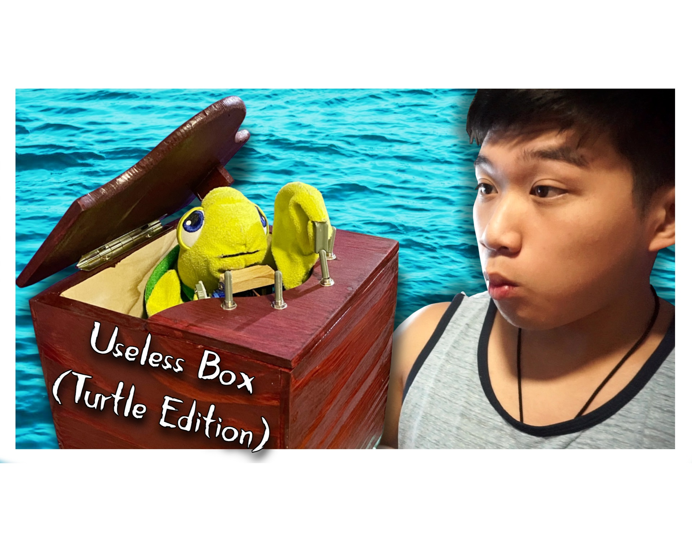
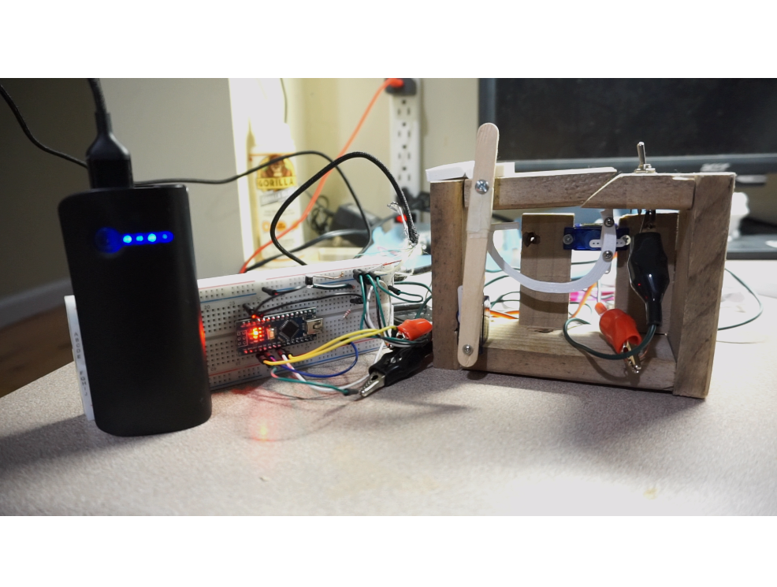
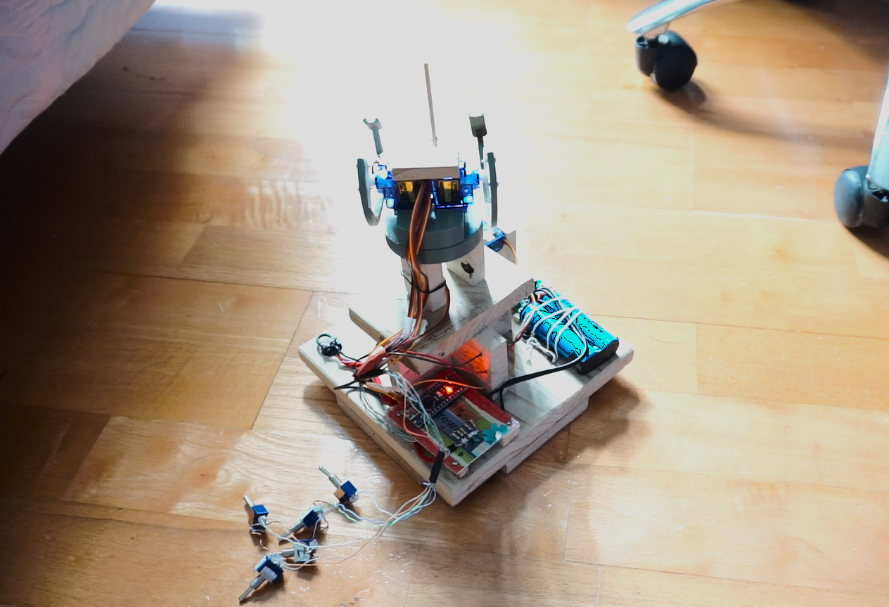
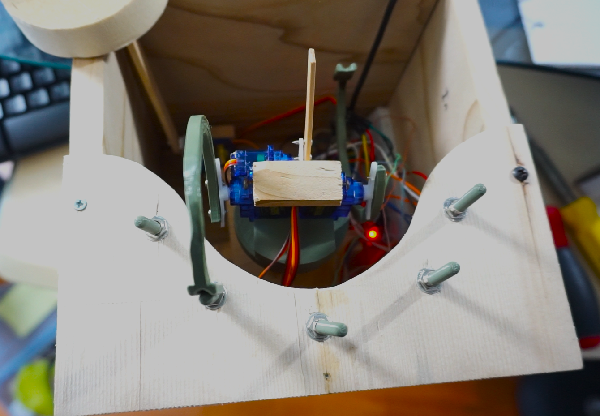
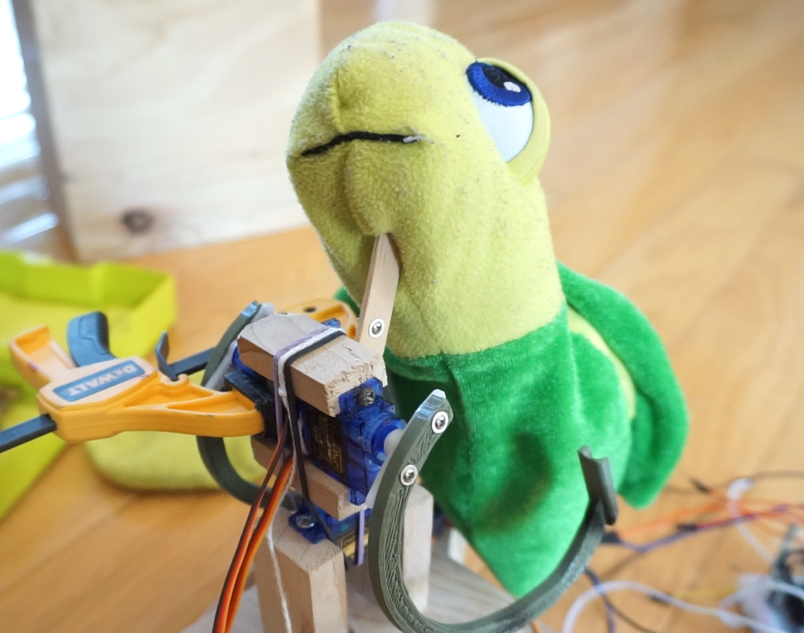
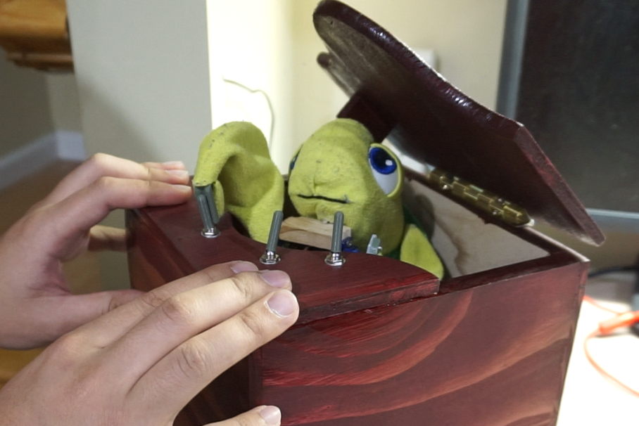

Project TrastMic






> This started it all, the first project I ever made that combined electronics, woodworking, Arduinos, 3D-printing, and tutles; and it was absolutely useless.
> The Useless Box is a common first project which turns itself off once turned on. I thought it would be a fitting first project for its simplistic nature, yet I wanted to add a spin to it, quite literally. The robot is able to spin around the box to target a specific toggle switch, and to my knowledge, it is the only useless box to be 5x as useless.
> 5 servos were used, 2 to actuate the arms, 1 to spin the body, 1 to lift the head, and 1 to open the lid.